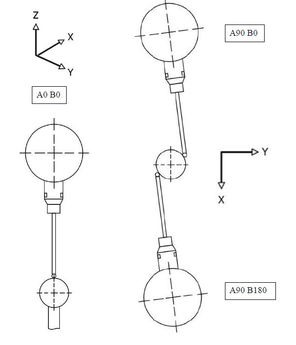

←
Squaring a probehead
Source: 6-notes/StepBySteps/Squares/PH/Probe Head Squares UK891_A1
This information is complied from a document provided in the above path
Probe Head Alignment Issues
Overview
Probe head misalignment can cause errors in calibrating probes. This can sometimes be diagnosed and fixed without a service call.
When to Use This
- Probe calibration errors are encountered.
- A probe collision has occurred.
- A probe head has been replaced.
- Errors appear when using a longer stylus.
- Stylus shanking occurs when measuring small or deep holes.
Requirements
- Calibration sphere installed.
- Nominal sensor available.
- Ability to use uncalibrated probe angles A90 B0 and A90 B180.
- Allen key for probe head adjustment.
- CAMIO software (if updating the probe head matrix).
Tip
Adjust the probe head in very small increments during alignment to avoid increasing the error.
Instructions
- Locate the calibration sphere using a nominal sensor.
- Measure the sphere from two opposite sides using uncalibrated probe angles:
- A90 B0
- A90 B180
- Take a minimum of four measurement points for each probe angle:
- One point on the top of the sphere.
- Remaining points taken equidistant around the equator.
- Calculate the diameter and centre of the sphere for each probe angle.
- Compare the measured sphere centre between A90 B0 and A90 B180.
- If there is a difference in the measured sphere centre, the probe head is misaligned.
- For a PH10M probe head:
- Slackening the Allen key retaining the head, nudge the head slightly clockwise or anticlockwise.
- Re-measure the sphere centre using A90 B0 and A90 B180.
- If the error increases, rotate the head fractionally in the opposite direction.
- Continue by trial and error until the error is at a minimum.
- Once aligned, update the probe head matrix using the CAMIO Head Alignment routine if possible.
- Re-calibrate all sensors.
- If the error cannot be resolved, call a service engineer to check the CMM.

Warning
A PH10MQ probe head is more complex and requires a service call. Field alignment must not be attempted.
Examples
- A long probe calibrates correctly at A0 B0 but experiences shanking when measuring a small, deep hole.
- Errors become apparent when a longer stylus is used after the probe head matrix has been updated using CAMIO.
Reference
Definitions
- Probe Head Matrix: Error correction data stored in the CMM configuration file.
- Shanking: Contact between the stylus shaft and the workpiece during measurement.
- Nominal Sensor: A sensor used to establish reference positions.
Tables
| Probe Head Type | Field Alignment Possible | Service Engineer Required |
|---|---|---|
| PH10M | Yes | No |
| PH10MQ | No | Yes |
Troubleshooting
- Problem: Probe calibration errors
- Cause: Probe head misalignment
-
Fix: Perform alignment procedure or call a service engineer
-
Problem: Stylus shanking during measurement
- Cause: Misalignment not apparent with short stylus
- Fix: Diagnose alignment using A90 B0 and A90 B180